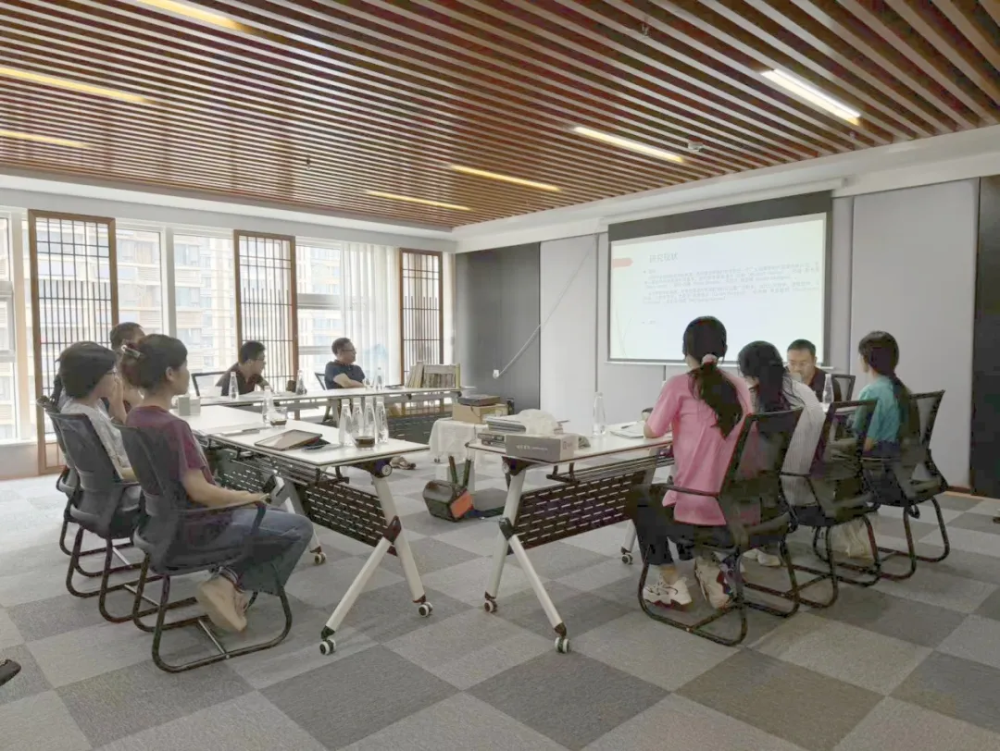
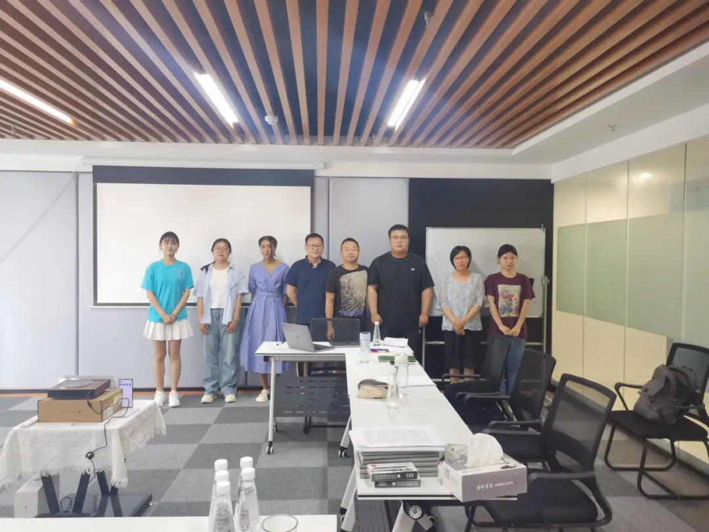

活动概述
2024 年 7 月 21 日下午 3 点，现代思想史研究中心举行第二期讲座，主题为“布伦塔诺哲学的多重面向”。主讲人为西北师范大学哲学系李岱巍博士，主持人为现代思想史研究中心刘铭老师。活动线上线下同步进行，并继续向社会公众开放。
纪要显示，刘铭老师在开场时再次强调了中心推动学术自由与思想交流的宗旨。李岱巍老师则将这场讲座定位为一场“引入性但不简化”的布伦塔诺导论，目的在于说明：布伦塔诺不仅是现象学的前史人物，也处于分析哲学、心理学与价值理论的交汇处。
人物生平与思想来源
讲座首先回顾了弗朗兹·布伦塔诺（Franz Brentano, 1838–1917）的求学与任教经历：从图宾根大学的博士论文《论亚里士多德存在者概念的多重含义》，到维尔茨堡大学的教职论文《亚里士多德的心理学》，再到《从经验的观点看心理学》的写作与在维也纳大学的学术活动，最终到晚年移居意大利和苏黎世。
按纪要整理，李岱巍老师将布伦塔诺思想的来源概括为三条：亚里士多德与中世纪哲学传统，孔德的实证主义，以及英国经验主义，尤其是密尔。这三条线索分别对应其本体论、方法论与经验分析的基本取向。
布伦塔诺学派与哲学贡献
纪要以布伦塔诺的任教经历为线索，区分了维尔茨堡时期与维也纳大学时期的学派传播。前者以卡尔·斯通普夫与安东·马蒂为代表，后者则涉及胡塞尔、迈农、特瓦多夫斯基、弗洛伊德乃至卡夫卡等更广泛的思想影响圈。
在哲学贡献方面，讲座特别突出四点：其一，意向性理论，即意识或心理现象的基本标志；其二，描述心理学与现象学分析的方法论价值；其三，将“价值”概念推进为伦理学基础的价值伦理学；其四，《从经验的立场看心理学》《真与明见》《论道德知识的起源》等重要著作构成的思想核心。
现象学与分析哲学的双重影响
按照纪要中的讲座结构，李岱巍老师将布伦塔诺的影响分为两条主线。第一条是现象学：他影响了胡塞尔早期的研究方式与哲学态度，也启发了海德格尔对“存在”问题的浓厚兴趣。第二条是分析哲学：奇泽姆在英美哲学界通过语义分析方法重构意向性理论，使布伦塔诺重新回到当代心灵哲学的讨论中心。
这种双重影响正是“多重面向”的题眼所在。布伦塔诺既不能只被纳入欧陆现象学史，也不能仅仅被当作心理学先驱，而应被放回更大的现代思想史版图中理解。
国内外研究现状
在研究现状部分，纪要明确区分了国际与国内两种情形。国际上，布伦塔诺及其学派通常在“广义现象学”或“奥地利哲学”传统中得到重新讨论，特别是在意向性、时间意识和意识本质问题上持续回到当代哲学视野。
相比之下，国内研究目前主要集中在现象学视角，对分析哲学脉络中的布伦塔诺关注仍较少。讲座因此也带有明显的问题意识：布伦塔诺研究在中国仍有相当大的展开空间。
提问环节
提问环节中，李岱巍老师进一步扩展介绍了布伦塔诺“意向性”概念，并借此说明传统以判断结构来理解意识的方式为何不足。纪要中特别保留了“意识三分”这一点，即观念、判断和情感被提升到相对并列的位置，从而让意识分析获得了更细致的内部结构。
活动照片
以下照片先参考纪要 PDF 中的现场图片，后续你上传原始活动照片后，可直接替换。

